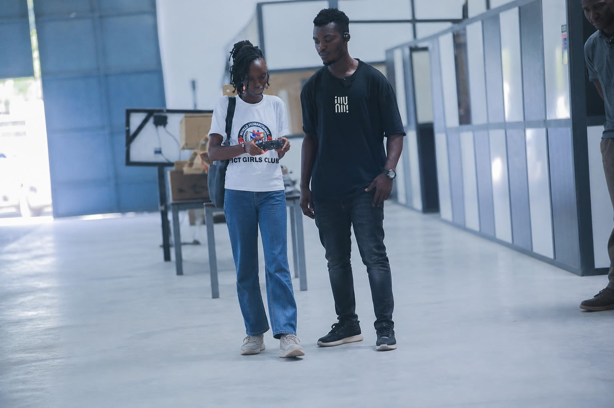

Digital Skills
Accessible digital literacy training and certificates that help learners take part with confidence.
- Digital foundations
- Productivity & safety
- Verifiable certificates
WHSF programmes equip girls, women, young people and underserved communities with practical digital skills, AI awareness, STEM education and pathways to take part in a changing world.

Each pathway combines accessible learning, practical experience and clearer routes into education, enterprise, work or community action.
Accessible digital literacy training and certificates that help learners take part with confidence.

Safe, practical learning spaces that strengthen digital confidence, curiosity and future ambition.

Hands-on STEM activities that build engineering thinking and practical problem-solving.
A global education and talent network connecting learners with skills and opportunity pathways.
Applied technology and climate-smart learning for rural and peri-urban girls and communities.

Open grants matched to your organisation, with eligibility checks, deadline reminders and a proposal template.
Figures may overlap across activities and should not be added together as a single beneficiary total.

Hands-on robotics, drone technology and digital skills build confidence, engineering thinking and practical problem-solving, while reconnecting rural and out-of-school learners with education.
Our wider programme ecosystem connects technology education with trusted information and long-term development.

ICT clubs, excursions, mentorship and certificates help girls see technology as achievable.
Explore Girls in ICT
Digital literacy, responsible AI, trusted information, cybersecurity and creative media.
Explore the libraryWHSF’s partnership with the Center for Project Innovation has supported ten scholarship awards.
Support opportunityEvery gift helps fund devices, trainers, excursions and certificates. WHSF is a 501(c)(3) charity, so US donations are tax deductible.
Donate nowWork with us on programme delivery, technology access, scholarships and evaluation.
Partner with us